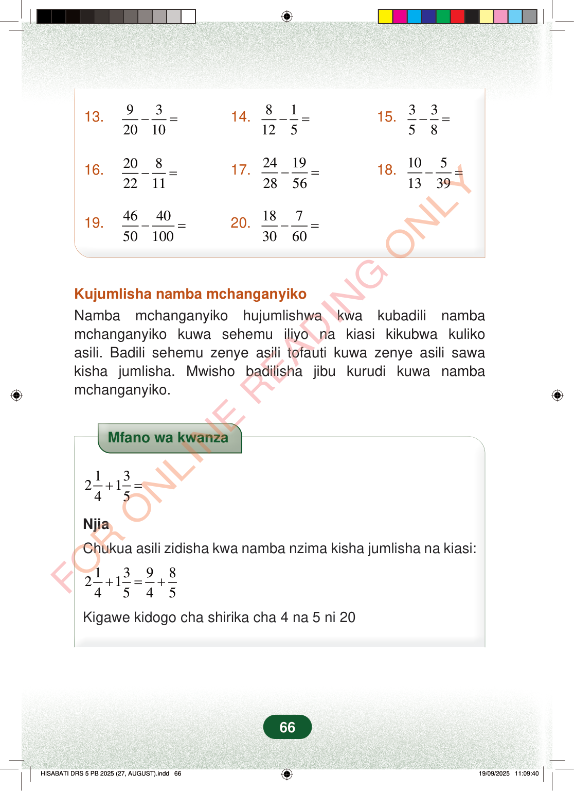

13.932010−=14.81125−=15.3358−=16.2082211−=17.24192856−=18.1051339−=19.464050100−=20.1873060−=Kujumlisha namba mchanganyikoNamba mchanganyiko hujumlishwa kwa kubadili nambamchanganyiko kuwa sehemu iliyo na kiasi kikubwa kulikoasili. Badili sehemu zenye asili tofauti kuwa zenye asili sawakisha jumlisha. Mwisho badilisha jibu kurudi kuwa nambamchanganyiko.Mfano wa kwanza132145+=NjiaChukua asili zidisha kwa namba nzima kisha jumlisha na kiasi:1398214545+=+Kigawe kidogo cha shirika cha 4 na 5 ni 2066
13. 9 3 20 10 − = 14. 8 1 12 5 − = 15. 3 3 5 8 − =
16. 20 8 22 11 − = 17. 24 19 28 56 − = 18. 10 5 13 39 − =
19. 46 40 50 100 − = 20. 18 7 30 60 − =
Kujumlisha namba mchanganyiko Namba mchanganyiko hujumlishwa kwa kubadili namba mchanganyiko kuwa sehemu iliyo na kiasi kikubwa kuliko asili. Badili sehemu zenye asili tofauti kuwa zenye asili sawa kisha jumlisha. Mwisho badilisha jibu kurudi kuwa namba mchanganyiko.
Mfano wa kwanza
1 3 2 1 4 5 + =
Njia
Chukua asili zidisha kwa namba nzima kisha jumlisha na kiasi:
1 3 9 8 2 1 4 5 4 5 + = +
Kigawe kidogo cha shirika cha 4 na 5 ni 20
66
Maswali ya hisabati ya kutoa sehemu, namba 13 hadi 20: 9/20 - 3/10, 8/12 - 1/5, 3/5 - 3/8, 20/22 - 8/11, 24/28 - 19/56, 10/13 - 5/39, 46/50 - 40/100, na 18/30 - 7/60.13. <math><mrow><mfrac><mn>9</mn><mn>20</mn></mfrac><mo>−</mo><mfrac><mn>3</mn><mn>10</mn></mfrac><mo>=</mo></mrow></math>14. <math><mrow><mfrac><mn>8</mn><mn>12</mn></mfrac><mo>−</mo><mfrac><mn>1</mn><mn>5</mn></mfrac><mo>=</mo></mrow></math>15. <math><mrow><mfrac><mn>3</mn><mn>5</mn></mfrac><mo>−</mo><mfrac><mn>3</mn><mn>8</mn></mfrac><mo>=</mo></mrow></math>16. <math><mrow><mfrac><mn>20</mn><mn>22</mn></mfrac><mo>−</mo><mfrac><mn>8</mn><mn>11</mn></mfrac><mo>=</mo></mrow></math>17. <math><mrow><mfrac><mn>24</mn><mn>28</mn></mfrac><mo>−</mo><mfrac><mn>19</mn><mn>56</mn></mfrac><mo>=</mo></mrow></math>18. <math><mrow><mfrac><mn>10</mn><mn>13</mn></mfrac><mo>−</mo><mfrac><mn>5</mn><mn>39</mn></mfrac><mo>=</mo></mrow></math>19. <math><mrow><mfrac><mn>46</mn><mn>50</mn></mfrac><mo>−</mo><mfrac><mn>40</mn><mn>100</mn></mfrac><mo>=</mo></mrow></math>20. <math><mrow><mfrac><mn>18</mn><mn>30</mn></mfrac><mo>−</mo><mfrac><mn>7</mn><mn>60</mn></mfrac><mo>=</mo></mrow></math>Kujumlisha namba mchanganyikoNamba mchanganyiko hujumlishwa kwa kubadili namba mchanganyiko kuwa sehemu iliyo na kiasi kikubwa kuliko asili.Badili sehemu zenye asili tofauti kuwa zenye asili sawa kisha jumlisha.Mwisho badilisha jibu kurudi kuwa namba mchanganyiko.Mfano wa kwanza wa kujumlisha namba mchanganyiko: 2 na 1/4 jumlisha 1 na 3/5. Njia inaonyesha kubadili kuwa 9/4 na 8/5, kisha kutafuta kigawe kidogo cha shirika cha 4 na 5 ambacho ni 20.Mfano wa kwanza<math><mrow><mn>2</mn><mfrac><mn>1</mn><mn>4</mn></mfrac><mo>+</mo><mn>1</mn><mfrac><mn>3</mn><mn>5</mn></mfrac><mo>=</mo></mrow></math>NjiaChukua asili zidisha kwa namba nzima kisha jumlisha na kiasi:<math><mrow><mn>2</mn><mfrac><mn>1</mn><mn>4</mn></mfrac><mo>+</mo><mn>1</mn><mfrac><mn>3</mn><mn>5</mn></mfrac><mo>=</mo><mfrac><mn>9</mn><mn>4</mn></mfrac><mo>+</mo><mfrac><mn>8</mn><mn>5</mn></mfrac></mrow></math>Kigawe kidogo cha shirika cha 4 na 5 ni 20